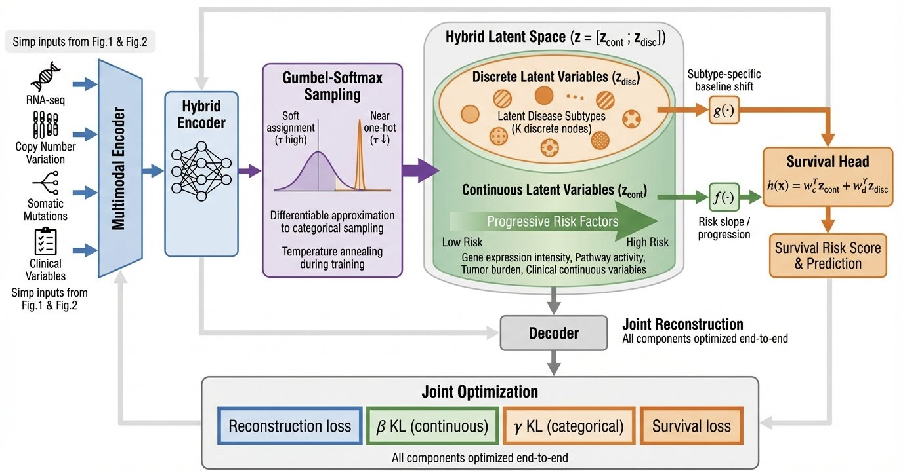

Jul 2026–present
Nanyang Technological University
Undergraduate Research Member · Generative AI Lab
Supervisors: Prof. Dacheng Tao and Dr. Siyuan Liang (Postdoctoral Researcher)
Computer Science & Business Analytics undergraduate
I am a dual-degree undergraduate at Nanyang Technological University, studying Computer Science and Business with a specialisation in Business Analytics.
My work spans multimodal learning, AI agents, and model evaluation. I am an undergraduate research member at NTU’s Generative AI Lab, supervised by Prof. Dacheng Tao and Dr. Siyuan Liang (Postdoctoral Researcher), and a research assistant at Xidian University’s Hangzhou Research Institute, advised by Prof. Linhua Jiang.
Previously, I worked with Dr. Meng Han at Zhejiang University’s Binjiang Research Institute on multimodal survival modelling, RAG robustness, and scientific agents.
Joined the Generative AI Lab at NTU as an undergraduate research member, supervised by Prof. Dacheng Tao and Dr. Siyuan Liang (Postdoctoral Researcher).
Our preprint MO-RiskVAE is available on arXiv.
Started working on a knowledge-graph-enhanced meteorological AI agent at Xidian University’s Hangzhou Research Institute.

Investigating how regularisation and latent-space design affect multimodal survival prediction. My contributions include controlled regularisation experiments, a continuous–discrete latent formulation, and manuscript preparation.
@misc{chen2026moriskvae,
title={MO-RiskVAE: A Multi-Omics Variational Autoencoder for Survival Risk Modeling in Multiple Myeloma},
author={Zixuan Chen and Heng Zhang and YuPeng Qin and WenPeng Xing and Qiang Wang and Da Wang and Changting Lin and Meng Han},
year={2026},
eprint={2604.06267},
archivePrefix={arXiv},
primaryClass={cs.LG},
url={https://arxiv.org/abs/2604.06267}
}TikTok TechJam 2026 · Five-person team
Detecting generated images under compression and distribution degradation using frozen DINOv2 features, specialist MLP heads, and a routing gate.
My role: MLP expert-head training and validation. The team’s fusion approach improved official validation ROC-AUC by 3.39 percentage points over its best individual expert.
Xidian University · Feb 2026–present
Connecting meteorological observations, domain knowledge, graph retrieval, and language-model reasoning to support anomaly detection and trend analysis.
My role: Knowledge representation for weather variables and events, experimental implementation, and analysis of model explanations.
Zhejiang University · Nov 2025–Apr 2026
Testing retrieval-augmented generation with adversarial inputs and analysing failure cases across model outputs.
My role: Prompt-injection test design, crawler-assisted evaluation, comparative analysis, and technical documentation.
At Zhejiang University’s Binjiang Research Institute (Dec 2025–Apr 2026), I implemented workflows for metal–organic framework representation and generation, supported preliminary structural and chemical feasibility checks, and contributed to manuscript preparation.
Undergraduate Research Member · Generative AI Lab
Supervisors: Prof. Dacheng Tao and Dr. Siyuan Liang (Postdoctoral Researcher)
Research Assistant
Advisor: Prof. Linhua Jiang
Research Assistant
Advisor: Dr. Meng Han
Corporate Banking Intern · Enterprise Financial Technology
Xin Fu Tong enterprise financial-services platform
Part-time Project Assistant · Investment Banking Department
Private-placement financing project team
Dual degree: Bachelor of Computing in Computer Science & Bachelor of Business (Business Analytics)
Selected coursework: Artificial Intelligence, Database Systems, Algorithm Design & Analysis, Analytics I.
For research collaborations or internship opportunities, feel free to get in touch.
HZHANG086@e.ntu.edu.sg ↗